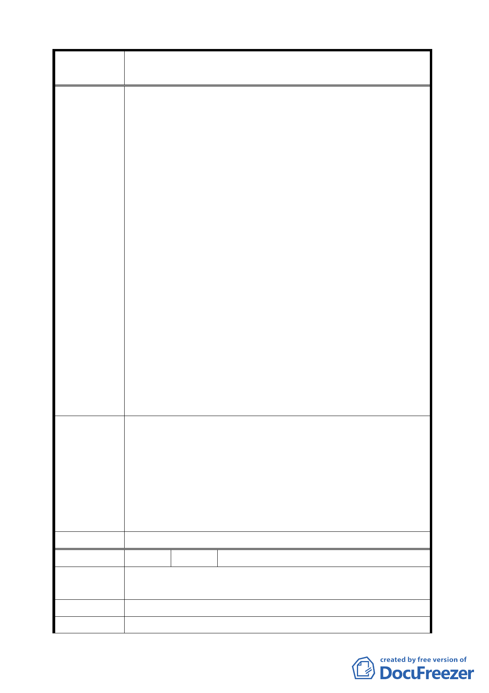

案
名
變更臺北市士林區至善段五小段 80、81、117 地號等加油站
用地為公園用地細部計畫案
2.落實環保，改建公園防治污染與噪音。
該加油站用地位於十字路口旁，匯集大量車流轉彎處，車
流無法有效減速，熄火加油易造成連環車禍非常危險，且
加油後再發動車出來時，與至善路直行車又迎面易相衝，
尤其是上下班假日尖峰時，更不堪設想。加油站無可避免
會造成污染與噪音，不僅故宮國寶無法維護，有損國際聲
譽，當地居民更是首當其衝的受害者，破壞環保將禍害千
年，後患無窮故不可設置。應改建公園造福百姓又可防治
污染與噪音。
3.預防炒作土地不法圖利。
眾所皆知，距該加油站用地附近早已另設有三大加油站。
該加油站用地頗狹窄，交通又易堵塞癱瘓，耗時費油等待
加油開車族不會來，經營不易恐不賺反賠錢，實應另覓適
合他處營業。弊端已向里長反映並公開提出於說明會。但
少數商人無視多數里民反對，仍堅持設加油站，恐其不擇
手段，變更加油站作炒作土地不法圖利。
4.國防安全。
該加油站用地緊鄰故宮與附近軍事陣地，目標顯著，如遭
恐怖份子或敵人蓄意縱火或破壞攻擊，後果不堪設想，應
有危機意識與安全考量，改建成綠化公園。
1.改建為都市綠化公園：請結合專業建築師、園藝、造景專
家，改加油站為綠化公園。
2.發展為有特色的觀光公園：該地緊臨故宮至德園旁，得觀
建 議 辦 法 光交通地利之便，可配合發展觀光綠化公園，展示本土特
有園藝與相關活動。
3.推廣成環保或運動公園：改建公園可配合環保宣導政策，
常舉辦假日二手用品義賣，或推廣運動（如太極拳教學）。
委 員 會 決 議 同編號 2。
編 號 19 陳情人 王北辰
陳情理由
設於路口 100 公尺內，平日車流較大影響交通。週邊環境易
受污染。
建 議 辦 法 因旁邊即為公園，改為公園用地較為適當。
委 員 會 決 議 同編號 6。
42